Gerolamo Cardano: Italian (1501–1576)
“You know what the fellow said—in Italy, for thirty years under the Borgias, they had warfare, terror, murder, and bloodshed, but they produced Michelangelo, Leonardo da Vinci, and the Renaissance. In Switzerland, they had brotherly love, they had five hundred years of democracy and peace—and what did that produce? The cuckoo clock.” These lines were spoken by Orson Welles, playing Harry Lime, the villain in the 1949 British film noir The Third Man, directed by Carol Reed (1906–1976). The English novelist Graham Greene (1904–1991) wrote the screenplay, but he credited these lines to Orson Welles, who probably added them when some extra dialogue was needed while the film was being shot.1 Although not historically accurate and dramatically exaggerated, the drawn comparison contains a grain of truth that cannot be denied. Without the patronage of tyrants who had plenty of money at their disposal, the Italian Renaissance would not have brought about so many masterpieces of architecture, sculpture, and painting. Democratic structures, on the other hand, seem to be less generous when it comes to financing arts and culture. The House of Borgia was an Italo-Spanish noble family, which became very powerful in the fifteenth and sixteenth centuries. The Borgias were involved in many ecclesiastical and political affairs and wholly without scruple in the choice of means to increase their power and influence. Like other wealthy dynasties such as the Medici, they dominated local governments and, over several generations, extended their political influence over wider parts of Italy and Europe. In the second half of the fifteenth century, they even gained control over the papacy, and the Borgia produced two popes: Alfonso de Borgia, who ruled as Pope Callixtus III during 1455–1458, and Rodrigo Lanzol Borgia, as Pope Alexander VI, during 1492–1503. Alexander VI was one of the most memorable of the corrupt and secular popes of the Renaissance; the Borgias were suspected of many crimes during his reign—including murder. In the course of his pontificate, Alexander appointed forty-seven cardinals to further his political policies. He had several illegitimate children, and in 1493 he made his teenaged son Cesare a cardinal. The name Borgia became a byword for libertinism and nepotism. Incidentally, in the same year, 1493, Pope Alexander followed a request by Queen Isabella and King Ferdinand of Spain and issued a papal bull granting Spain the exclusive right to claim the New World lands discovered by Christopher Columbus. However, in spite of their cold-blooded greed for power, the Borgias as well as the Medici
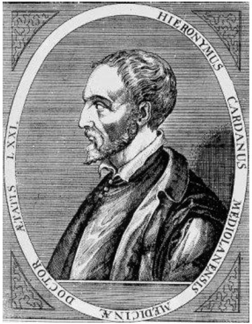
Figure 11.1. Gerolamo Cardano. Copper engraving from the seventeenth century, artist unknown. https://commons.wikimedia.org/wiki/File:Jer%C3%B4me_Cardan.jpg
{kind=link}
were also great patrons of the arts who contributed significantly to the Renaissance. In particular, they brought the spirit of Renaissance art and philosophy into the Vatican. Alexander had the University of Rome rebuilt and hired the greatest professors to teach there. He restored and embellished the Vatican palaces and persuaded Michelangelo to draw plans for the rebuilding of St. Peter’s Basilica. In 1502, his son Cesare, by now commander of the papal armies, hired Leonardo da Vinci as his chief military engineer and architect. The Italian Renaissance began during the fourteenth century, and it was the earliest manifestation of the general European Renaissance, a period of great cultural change and achievement that marked the transition between medieval and modern Europe. While the most famous figures of the Italian Renaissance are artists such as Leonardo da Vinci, Michelangelo, or Raphael, great advances also occurred in mathematics, contributing substantially to the transition from natural philosophy to modern science and the scientific revolution in which Galileo Galilei (1564–1642) would play a central role.
Perhaps the most influential mathematician of the Italian Renaissance was Gerolamo Cardano, and his biography fits quite perfectly to Orson Welles’s description of Italy during the reign of the Borgias.2 Cardano was born in Pavia, Lombardy, Italy, on September 24, 1501, as the illegitimate child of Fazio Cardano, a mathematically gifted jurist and a close personal friend of Leonardo da Vinci. Shortly before his birth, his mother, Chiara Micheria, had to move from Milan to Pavia to escape the Plague; her three other children died from the disease. In addition to his law practice, Fazio Cardano lectured on geometry at the University of Pavia and at the Piatti Foundation in Milan. Chiara lived apart from Fazio for many years, but, later in life, they married. Gerolamo was often sick and unhappy as a child. He received his education from his overbearing father and became his assistant. Fazio Cardano wanted his son to study law, but Gerolamo was more attracted to science and philosophy. His father’s lessons on geometry had awakened his interest in the subject. After an argument with his father, he entered the University of Pavia in 1520 to study medicine. In 1524, the university had to close because of the Italian Wars (1521–1526), and Cardano moved to the University of Padua to complete his studies. He graduated with a doctorate in medicine in 1525. Cardano was a brilliant student but his eccentric and confrontational style did not earn him many friends. His father had died shortly after Gerolamo’s move to Pavia, and the small bequest was soon eaten up. To improve his finances, Cardano had turned to gambling. His understanding of probability gave him an advantage over his opponents and, for some time, he indeed managed to make a living from playing card games, dice, and chess. After earning his doctorate, he repeatedly applied to join the College of Physicians in Milan, where his mother still lived. In spite of his excellent professional skills, he was not admitted, because of his reputation as a difficult person with strong opinions. The discovery of Cardano’s illegitimate birth gave the college an official reason to reject his application. Without a membership in the College of Physicians, he could not practice as a physician in Milan, so he went to a small village near Padua and set up a small medical practice there. In 1531, Cardano married Lucia Bandarini, the daughter of a neighbor. Cardano’s practice did not earn him enough money to support a family, and another attempt to get approved by the College of Physicians failed. To improve his finances, he started gambling again. But this time he lost more often than he won, and, after a series of losses, he even had to pawn his wife’s jewelry to pay the bills. With no future perspectives in the countryside, Cardano and his wife moved to Milan, hoping to improve their situation.
After some struggling in the beginning, Cardano was fortunate to get his father’s former position as a lecturer in mathematics at the Piatti Foundation. The job was not too demanding and so he had enough free time to treat a few patients in private. His successful treatments steadily increased his reputation as a medical doctor, and even members of the College of Physicians began to consult him for advice. Moreover, he gained wealth and influence through his appreciative upper-class patients. He was able to quit his teaching position, but he did not give up mathematics. In 1539, he finally received his admission from the College of Physicians, with the help of some influential supporters. However, in the same year, he published his first two mathematical books and he got in contact with Tartaglia, a self-taught mathematician who had achieved fame by winning a public competition on solving cubic equations at the University of Bologna.
Tartaglia was born as Niccolò Fontana in Brescia, Italy, in 1499.3 His father was a dispatch rider who traveled to neighboring towns to deliver mail. Tragically, he was murdered by robbers, leaving his wife, the six-year-old Niccolò, and his two siblings in poverty. The poor family suffered further, when French troops invaded Brescia during the War of the League of Cambrai against Venice. When the French finally broke through, they massacred the inhabitants of the city. Niccolò and his family sought sanctuary in the local cathedral, but the French entered, and a soldier sliced Niccolò’s jaw and palate with a saber and left him for dead. Niccolò was lucky to survive, but his speech was permanently impaired due to the injury, and so he got the nickname “Tartaglia” (“stammerer”).
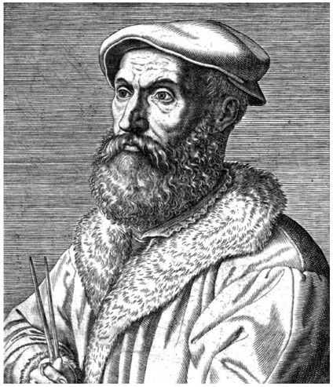
Figure 11.2. Niccolò Fontana Tartaglia. Wikimedia Commons: https://commons.wikimedia.org/wiki/File:Niccol%C3%B2_Tartaglia.jpg. Year of creation: 1572;
{kind=link}
Copper engraving (?); Rijksmuseum; Artist unknown.
As an adult, he grew a beard to cover his scars. He worked as an engineer and bookkeeper in the Republic of Venice, and he was also a very ambitious, self-taught mathematician. At that time, Italian scholars had to prove their academic competence in public competition against other scholars, setting each other mathematical challenges. In 1535, Tartaglia won a famous public competition by demonstrating that he was able to solve a special type of cubic equations (equations with terms including x3 as the highest power), something that had been considered impossible. He had discovered a method to solve equations of the form x3 + bx + c = 0 as well as x3 + ax2 + c = 0, but not the general case of a cubic equation x3 + ax2 + bx + c = 0. Tartaglia’s findings caught the attention of Cardano and, after having failed to find the solution by himself, he persistently tried to persuade Tartaglia to reveal his method. Tartaglia finally agreed to tell Cardano his solution, but Cardano had to promise that he would keep it secret. Tartaglia divulged his formula in the form of a poem, to make it more difficult to read for other mathematicians, in case the paper fell into the wrong hands:
When the cube and things together
Are equal to some discrete number,
Find two other numbers differing in this one.
Then you will keep this as a habit
That their product should always be equal
Exactly to the cube of a third of the things.
The remainder then as a general rule
Of their cube roots subtracted
Will be equal to your principal thing
In the second of these acts,
When the cube remains alone,
You will observe these other agreements:
You will at once divide the number into two parts
So that the one times the other produces clearly
The cube of the third of the things exactly.
Then of these two parts, as a habitual rule,
You will take the cube roots added together,
And this sum will be your thought.
The third of these calculations of ours
Is solved with the second if you take good care,
As in their nature they are almost matched.
These things I found, and not with sluggish steps,
In the year one thousand five hundred, four and thirty.
With foundations strong and sturdy
In the city girdled by the sea.4
This poem refers to one particular case of a cubic equation, x3 + bx + c = 0 (in general, a cubic equation may also contain a term with x2). With knowledge of Tartaglia’s solution, Cardano soon succeeded in solving the general case of a cubic equation, x3 + ax2 + bx + c = 0, and only a short time later, Cardano’s student and secretary, Ludovico Ferrari (1522–1565), devised a similar method to solve quartic equations (fourth-degree equations with terms of highest degree x4). Of course, Cardano was eager to publish these results in his next book, with credit to Tartaglia for the decisive steps, but he had sworn that he would not reveal Tartaglia’s method. However, in 1543, Cardano traveled to Bologna, where he was shown the notebooks of the deceased mathematician Scipione del Ferro (1465–1526). Cardano discovered that del Ferro had solved cubic equations long before Tartaglia (yet for less general cases) and thus felt no longer bound to keep the solution secret. In 1545, Cardano published his book Artis Magnæ, Sive de Regulis Algebraicis Liber Unus (Book Number One about the Great Art, or The Rules of Algebra; see fig. 11.3), or Ars Magna, as it is more commonly known, which is considered one of the greatest scientific treatises of the early Renaissance.
The book included the methods to solve cubic equations, and Cardano explained the history of their discovery as follows: “In our own days Scipione del Ferro of Bologna has solved the case of the cube and first power equal to a constant, a very elegant and admirable accomplishment. . . . In emulation of him, my friend Niccolò Tartaglia of Brescia, not wanting to be out-done, solved the same case when he got into a contest with his [Scipione’s] pupil, Antonio Maria Fior, and, moved by many entreaties, gave it to me.”5 The solution to the general quartic equation was also contained in the book, with credit to Cardano’s student, Ludovico Ferrari. In spite of the proper credits, Tartaglia felt betrayed by Cardano, who had broken his word by publishing Tartaglia’s solution. In the following year, Tartaglia published a book in which he laid out his side of the story and personally attacked Cardano. The dispute lasted for many years, and it culminated in a public contest between Tartaglia and Ferrari in Milan. Tartaglia soon realized that Ferrari understood cubic and quartic equations better than he did, then left Milan before the contest was over. Thus, Ferrari won by default and Tartaglia’s reputation diminished dramatically. As a result of the lost contest, he became effectively unemployable as a mathematician and had to resume his previous job in Venice, where he died in poverty. However, finding the solution to cubic equations was not Tartaglia’s only contribution to mathematics. He is also remembered for the first translation of Euclid’s Elements into a modern language (Italian), and he was the first to apply mathematics to the study of ballistic curves (paths of cannonballs).
Cardano’s Ars Magna established him as one of the leading mathematicians of his time, and the solution methods for cubic and quartic equations are clearly the most important results in this work. Today, most mathematicians would acknowledge del Ferro, Tartaglia, and Cardano for the solution of cubic equations, since they all made decisive contributions. Let us
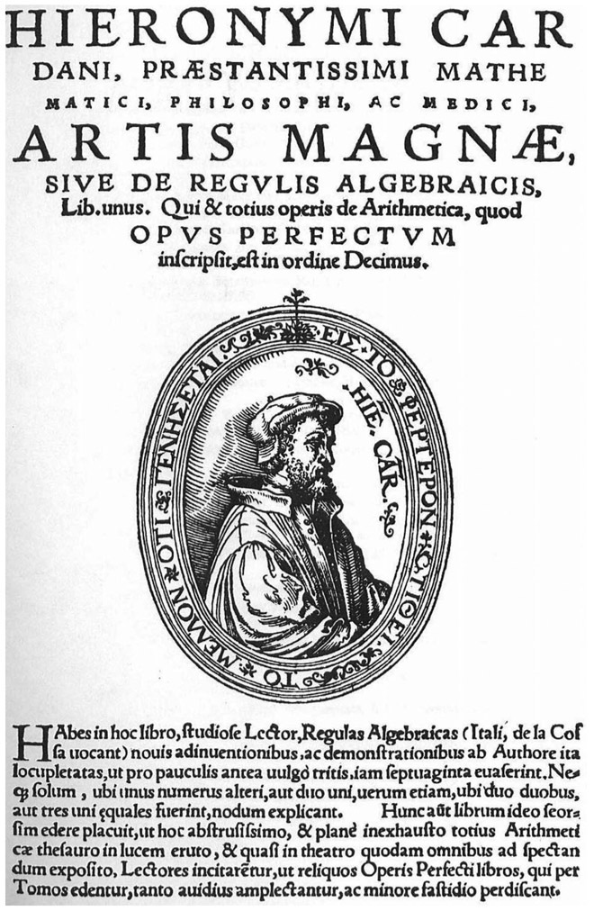
Figure 11.3. The title page of the Ars Magna (The Great Art), first published in 1545.
now reveal their method to obtain a solution, using modern mathematical symbols: We may consider a general cubic equation, x3 + ax2 + bx + c = 0, noting that any cubic equation can be written in this form (we divide an equation by any nonzero number to obtain an equivalent equation). Substituting
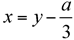
we write the equation as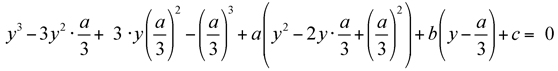
and, by expanding the powers, we obtain:
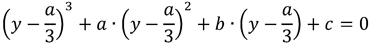
which reduces to y3 = py + q, where
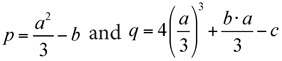
Then we let y = z + w. Expanding the left side of the equation, (z + w)3 = p (z + w) + q, we obtain z3 + w3 + 3zw (z + w) = p (z + w) + q. Obviously, this equation is satisfied if z3 + w3 = q and 3zw = p. We use the second of these equations to write
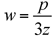
and substitute this into the first equation, thereby arriving at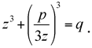
Multiplying this equation by z3 we get
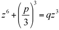
, which we can write as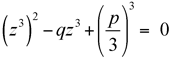
,a quadratic equation for z3 with roots
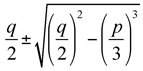
Since z3 + w3 = q, one root represents z3, and the other one, w3. Recalling that y = z + w, we finally get
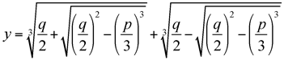
which is indeed a solution of the cubic equation y3 = py + q. This however, implies that we have also solved the original equation x3 + ax2 + bx + c = 0, as x can easily be inferred from y via the transformation
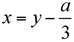
.Cardano’s wife, Lucia, died in 1546; they had three children, Giovanni, Chiara, and Aldo Battista. Cardano became a professor of medicine at the University of Padua and one of the most sought-after physicians in aristocratic circles. He later wrote that he even turned down offers from the kings of Denmark and France, and the queen of Scotland. Contrary to his great professional success, his private life was overshadowed by tragedies. Cardano’s eldest son, Giovanni Battista, was executed for poisoning his wife; and his youngest son, Aldo Battista, became a gambler with friends of dubious character. Around 1563, Cardano wrote another important mathematical treatise, Liber de Ludo Aleae (Book on Games of Chance), which was not published until 1663. It contains the first systematic treatment of probability, based on the game of throwing dice as an example, as well as a section on effective cheating methods. He also made significant contributions to our knowledge of hypocycloids (curves traced out by a point on circles that roll inside another circle), which was published in De proportionibus in 1570. Cardano was an extremely prolific writer and one of the last polymaths of the Renaissance. He wrote more than 230 books in diverse fields, of which 138 were published; apart from mathematics and medicine, he was also interested in physics, biology, chemistry, astronomy, and even astrology. In fact, he was put in jail on the charge of heresy for casting the horoscope of Jesus Christ. After he was released, he went to Rome, and the pope not only forgave him but even granted him a pension. Cardano spent the last years of his life in Rome, where he died on September 21, 1576. He is reported to have correctly predicted the exact date of his own death, but it has been claimed that he achieved this by committing suicide.